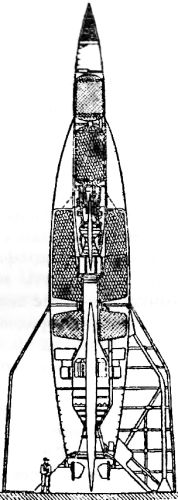

Межконтинентальные ракеты Третьего рейха
Перечень проектов баллистических ракет серии «А» не заканчивается системой «А-5», понадобившейся при проектировании ракеты «А-4» («Фау-2»).
Например, конструкторы Пенемюнде разработали проект ракеты «А-6», но ни одной модели не было построено. Затем появились крылатые ракеты «А-7» (как вариант ракеты «А-5») и «А-9».
Идея придания ракетам несущих поверхностей основана на соображении увеличения дальности полета ракеты при ее возвращении в плотные слои атмосферы. Расчет здесь прост: посредством крыльев пустая и потому относительно легкая ракета может быть превращена в тело, подчиняющееся законам аэродинамики, то есть в своеобразный скоростной планер. Предварительный анализ показывал, что наличие коротких крыльев позволяло увеличить дальность полета на 160 километров, то есть для ракеты с характеристиками «Фау-2» дальность доводилась до 480 километров. Такой вариант ракеты «А-4» действительно был испытан, что привело к созданию модифицированного варианта — «А-4Ь».
В декабре 1944 года было решено построить двадцать прототипов этой новой ракеты. Два первых запуска «А-4Ь» закончились неудачей, однако работы были продолжены, и 27 января 1945 года наконец состоялся успешный старт. Полет шел по плану, но в момент перехода к планированию повредилось одно из крыльев, и расчетная дальность не была достигнута.
Разрабатывался также управляемый вариант «А-4Ь» с небольшой кабиной, убирающимся колесным шасси и небольшим дополнительным реактивным двигателем, позволяющим увеличить дальность полета. Этот проект, впрочем, так и остался на стадии эскизного проектирования.
На базе проекта «А-4Ь» разрабатывалась ракета, получившая обозначение «А-9» (ее также называли «Amerika-Rakete»), которая должна была работать на топливе, несколько отличном от того, которое применялось в ракете «А-4», так как ее предполагалось разгонять с помощью ракеты-носителя «А-10» со стартовым весом около 75 тонн и суммарной тягой двигателей в 180 тонн. Это делало двухступенчатую ракету «А-9/А-10» межконтинентальной «трансатлантической» ракетой, которую можно было бы применить против Соединенных Штатов Америки. Общая длина ракеты составляла 29 метров, диаметр — 3,5 метра, максимально достижимая высота — 180 километров, дальность — 4800 километров.

История системы «А-9/А-10» до сих пор вызывает горячие споры. Одни утверждают, что было изготовлено только два или три макетных образца ракеты «А-9», а ускоритель «А-10» так и остался на бумаге. Другие, ссылаясь на изыскания западных историков, говорят о том, что межконтинентальная ракета Третьего рейха была не только сконструирована, но и доведена до серийного производства.
В качестве аргумента в пользу последней версии обычно приводится следующая история. В ночь на 30 ноября 1944 года береговая охрана США уничтожила высадившуюся на атлантическое побережье немецкую диверсионную группу «Эльстер». Среди багажа убитых в перестрелке диверсантов обнаружили портативный и весьма мощный радиомаяк. Позже выяснилось, что его должны были установить на один из небоскребов Манхэттена в Нью-Йорке, чтобы обеспечить точное наведение межконтинентальной ракеты.
Далее сторонники этой версии рассказывают, что было изготовлено две ракеты типа «А-9/А-10». Одну планировалось испытать, выпустив по Гренландии. Вторую, с боеголовкой в тонну мощного взрывчатого аматола 60/40, собирались запустить на Нью-Йорк.
Сведения о ходе эксперимента довольно туманны. Один из источников говорит о том, что операция «Эльстер» — запуск трансатлантической ракеты по несуществующему маяку состоялся 8 января 1945 года, закончившись неудачей. Другой запуск был произведен 24 января 1945 года, и на борту ракеты находился пилот Рудольф Шредер. Однако на десятой секунде после взлета ему показалось, будто ракета загорелась, и он раскусил ампулу с цианистым калием, предусмотренную для избавления от мучительной смерти. Тем не менее «А-9/А-10» пошла нормально, выскочив в космос по баллистической траектории. Но без управления ракета сбилась с курса и упала где-то в Атлантике.
Согласно третьей существующей версии, немцы произвели около 48 пусков системы «А-9/А-10», причем в 1944 году на старте и в полете взорвалось 16 образцов. Начальник военного отдела СС оберштурмбаннфюрер Отто Скорцени даже успел набрать отряд пилотов для этой ракеты: по разным сведениям, от сотни до полутысячи человек. Их собирались использовать для наведения ракет на конечном этапе полета — так называемая система «А-9/А-10Ь». Как и в случае с пилотируемой модификацией «Фау-1», создатели трансатлантической ракеты вовсе не собирались делать из пилотов камикадзе — после нацеливания ракеты на какой-нибудь из американских городов пилоты должны были выбрасываться с парашютом над заданным местом в океане, где их поджидали бы подводные лодки…